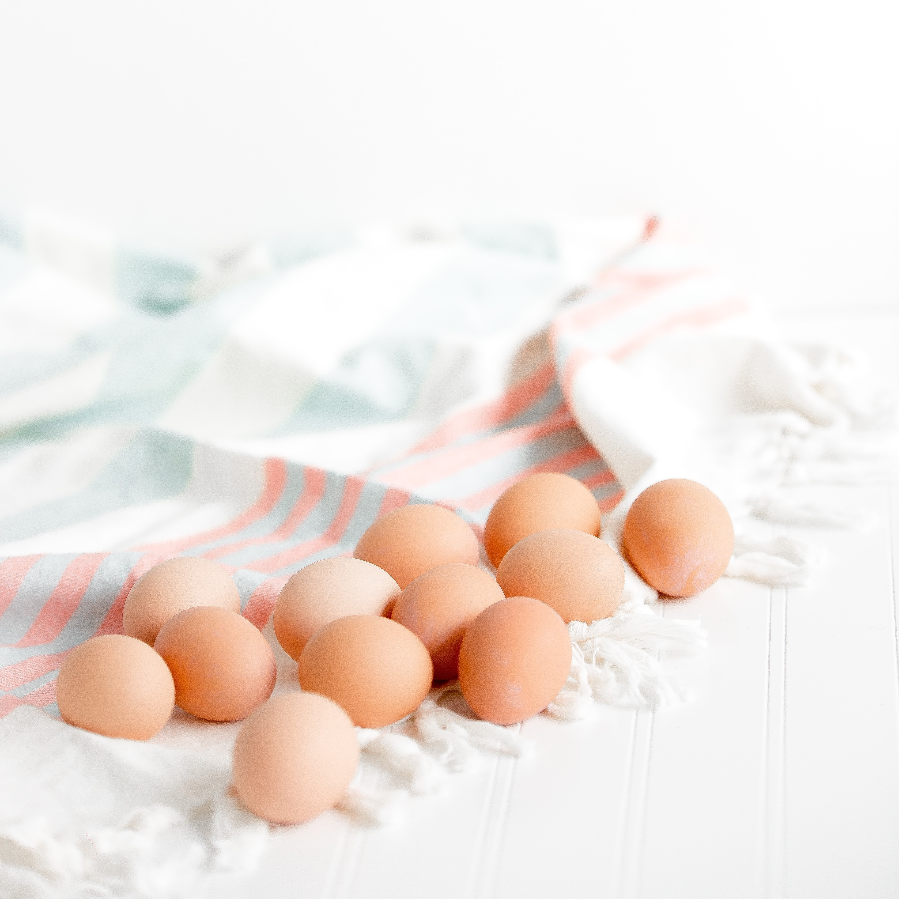

Background
I really like lemon bars. But there aren't any free and aesthetic images of lemon bars, so here are some pictures of mildly related content.
I've made lemon bars multiple times throughout my life and I've found a few favorite recipes. However, after baking different lemon bars, and asking people to compare them, I learned that the filling from one recipe was better, whereas the crust for the other recipe was better. Thus, I decided to combine the two into a single recipe for my reference. I have yet to actually try making this new recipe, but I am excited to do so!
The recipe for the crust is from Laura in the Kitchen.
The recipe for the filling is from the Costco Wholesale recipe book.
Ingredients
- 2 cups flour
- 1/2 cup powdered sugar
- 2 sticks of unsalted butter, at room temperature
- Ingredient 9
For the crust:
- 1/4 cup all-purpose flour
- 1-1/2 cups granulated sugar
- 4 large eggs
- Juice of 2 Bee Sweet lemons
For the filling:
- Confectioners' sugar, as needed
- Lemon wedge, for garnish
Directions
- Preheat your oven to 350 degrees Fahrenheit. Line a 9 by 13 inch baking pan with aluminum foil and set aside.
- In a large bowl, combine all of the ingredients for the crust and mix together until it forms a dough. Press the dough in the bottom and halfway up the sides of the baking pan and bake for 20 minutes. Remove from oven and let cool for a few minutes.
- In another bowl, whisk together the 1-1/2 cups sugar and 1/4 cup flour. Whisk in eggs and lemon juice. Pour over the baked crust.
- Bake for an additional 20 minutes. The bars will firm up as they cool.
- Once the pan has cooled, cut into 2-inch squares and dust with confectioners's ugar, if desired. Arrange in a checkerboard fashion on a desesrt tray. Garnish with a lemon wedge. Makes 24 servings.

